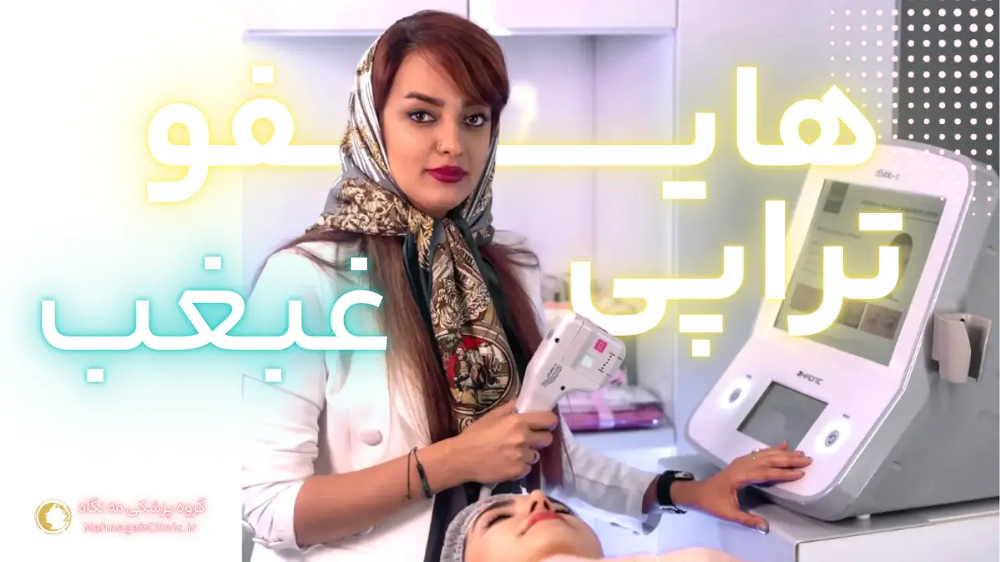
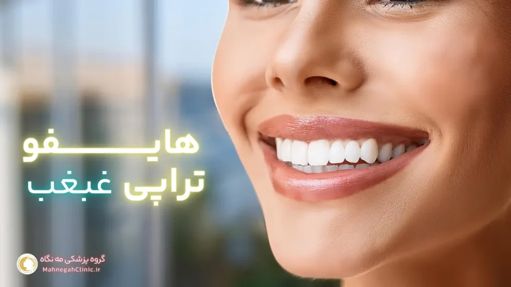
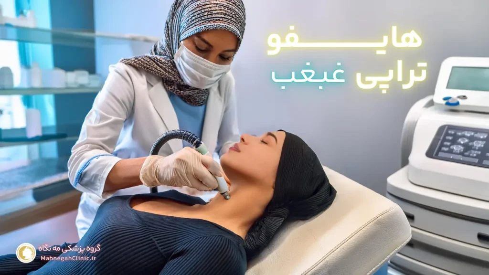
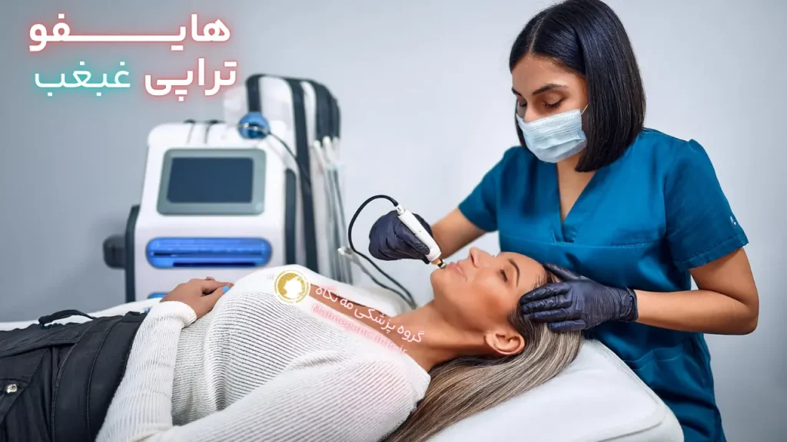
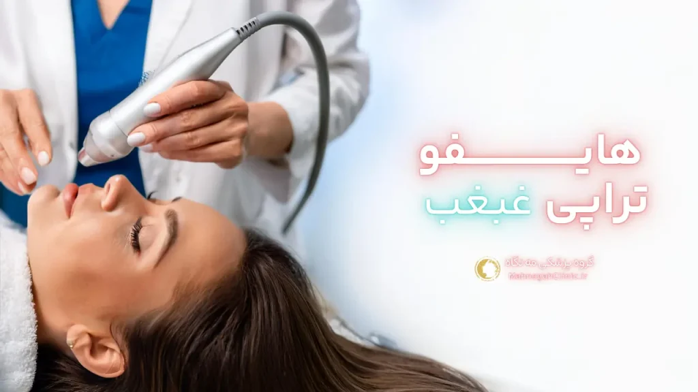
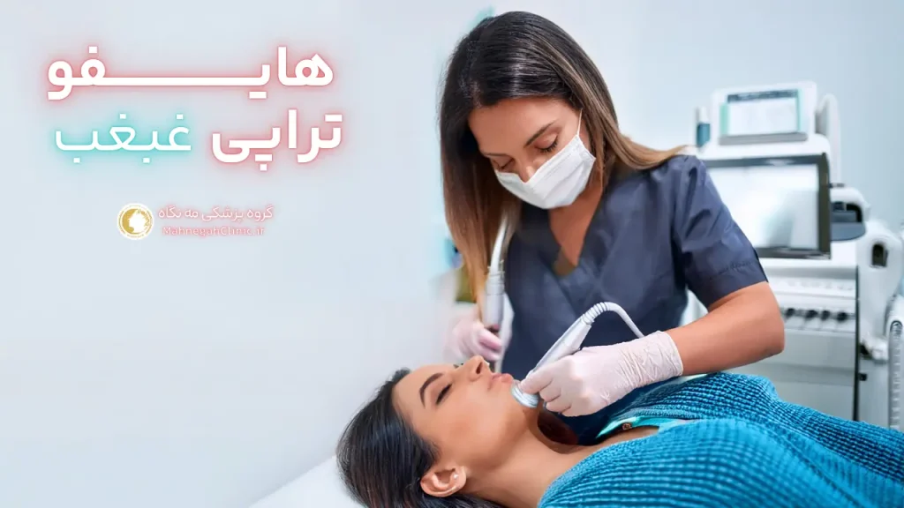

خانه / مجله / جوانسازی پوست
هایفوتراپی غبغب در سعادت آباد خداحافظی 👋 بدون جراحی!

هایفوتراپی غبغب چیست؟
غبغب، آن لایه چربی آزاردهنده زیر چانه، میتواند اعتماد به نفس هر کسی را خدشهدار کند. خوشبختانه، با پیشرفتهای فناوری در زمینه زیبایی، روشهای غیرتهاجمی متعددی برای رفع این مشکل وجود دارد. یکی از این روشهای موثر و محبوب، هایفوتراپی غبغب است. اما هایفوتراپی غبغب چیست و چگونه عمل میکند؟ (هایفوتراپی غبغب در سعادت آباد)
تعریف هایفوتراپی غبغب
هایفوتراپی غبغب یک روش غیرجراحی و بدون درد است که از انرژی امواج فراصوت متمرکز برای هدف قرار دادن و از بین بردن سلولهای چربی در ناحیه غبغب استفاده میکند.
این امواج با نفوذ به لایههای عمیق پوست، باعث ایجاد گرما میشوند و در نتیجه سلولهای چربی را تخریب میکنند. بدن به طور طبیعی این سلولهای چربی تخریب شده را طی چند هفته تا چند ماه جذب و دفع میکند و در نتیجه غبغب به تدریج کاهش مییابد و خط فک مشخصتر میشود.
مزایای هایفوتراپی غبغب
- غیرتهاجمی و بدون درد: هایفوتراپی غبغب نیازی به برش یا بیهوشی ندارد و در نتیجه دوره نقاهت بسیار کوتاهی دارد. اکثر افراد میتوانند بلافاصله پس از درمان به فعالیتهای روزمره خود بازگردند.
- موثر و ماندگار: هایفوتراپی غبغب نتایج قابل توجه و ماندگاری را ارائه میدهد. با از بین بردن سلولهای چربی، غبغب به طور قابل توجهی کاهش مییابد و خط فک بهبود مییابد.
- ایمن و کمعارضه: هایفوتراپی غبغب یک روش ایمن و تایید شده توسط FDA است. عوارض جانبی آن معمولاً خفیف و موقتی هستند و شامل قرمزی، تورم و کبودی میشوند.
- افزایش اعتماد به نفس: با رفع غبغب و بهبود خط فک، هایفوتراپی میتواند به طور قابل توجهی اعتماد به نفس شما را افزایش دهد و باعث شود احساس بهتری نسبت به ظاهر خود داشته باشید.
اگر به دنبال یک روش غیرتهاجمی، موثر و ایمن برای رفع غبغب و بهبود خط فک خود هستید، هایفوتراپی غبغب میتواند یک گزینه عالی برای شما باشد. با مشورت با یک پزشک متخصص و مجرب، میتوانید از نتایج مطلوب و ماندگار این روش بهرهمند شوید.
روش هایفوتراپی غبغب در سعادت آباد
حال که با مفهوم هایفوتراپی غبغب آشنا شدیم، بیایید نگاهی دقیقتر به روش انجام این فرآیند بیندازیم. هایفوتراپی غبغب روشی ساده و سریع است که در کلینیکهای زیبایی معتبر، از جمله در منطقه سعادت آباد، انجام میشود. اما این فرآیند دقیقاً چگونه است؟
مراحل انجام هایفوتراپی غبغب در سعادت آباد
- مشاوره و ارزیابی: در ابتدا، شما با یک پزشک متخصص و مجرب در زمینه زیبایی مشورت خواهید کرد. پزشک، وضعیت غبغب شما را ارزیابی کرده و در مورد انتظارات و اهداف شما از درمان صحبت میکند. همچنین، پزشک در مورد روش هایفوتراپی غبغب، مزایا، عوارض و مراقبتهای پس از درمان به شما اطلاعات لازم را ارائه میدهد.
- آمادهسازی: قبل از شروع درمان، ناحیه غبغب شما تمیز و ضدعفونی میشود. در برخی موارد، ممکن است از بیحسی موضعی برای کاهش هرگونه احساس ناراحتی استفاده شود، اگرچه هایفوتراپی غبغب به طور کلی روشی بدون درد است.
- انجام هایفوتراپی: پزشک، دستگاه هایفو را بر روی ناحیه غبغب شما قرار میدهد و امواج فراصوت متمرکز را به لایههای عمیق پوست میفرستد. این امواج باعث ایجاد گرما میشوند و سلولهای چربی را هدف قرار داده و تخریب میکنند. در طول درمان، ممکن است احساس گرمای خفیف یا سوزش داشته باشید، اما این احساسات معمولاً قابل تحمل هستند.
- پایان درمان و مراقبتهای پس از آن: پس از اتمام درمان، میتوانید بلافاصله به فعالیتهای روزمره خود بازگردید. پزشک، توصیههای لازم در مورد مراقبتهای پس از درمان، از جمله استفاده از کمپرس سرد برای کاهش تورم و اجتناب از قرار گرفتن در معرض نور خورشید، را به شما ارائه میدهد.
آمادگی قبل از هایفوتراپی غبغب
برای اطمینان از بهترین نتایج و کاهش هرگونه عوارض جانبی، رعایت برخی نکات قبل از انجام هایفوتراپی غبغب مهم است:
- مشاوره با پزشک: قبل از انجام هایفوتراپی، حتماً با یک پزشک متخصص و مجرب مشورت کنید. پزشک، وضعیت شما را ارزیابی کرده و در مورد مناسب بودن هایفوتراپی برای شما تصمیمگیری میکند.
- اجتناب از مصرف داروهای رقیقکننده خون: حداقل یک هفته قبل از درمان، از مصرف داروهای رقیقکننده خون مانند آسپرین و ایبوپروفن خودداری کنید، مگر اینکه پزشک شما دستور دیگری داده باشد.
- پرهیز از مصرف الکل و دخانیات: حداقل ۲۴ ساعت قبل از درمان، از مصرف الکل و دخانیات خودداری کنید.
- اطلاعرسانی در مورد بیماریها و حساسیتها: در صورت داشتن هرگونه بیماری زمینهای یا حساسیت، حتماً پزشک خود را مطلع کنید.
- عدم استفاده از محصولات آرایشی و بهداشتی: در روز درمان، از استفاده از محصولات آرایشی و بهداشتی در ناحیه غبغب خودداری کنید.
با رعایت این نکات و پیروی از توصیههای پزشک، میتوانید از یک تجربه ایمن و موثر در هایفوتراپی غبغب در سعادت آباد بهرهمند شوید و به نتایج مطلوب خود دست یابید.

رفع غبغب در یک جلسه با هایفوتراپی
یکی از سوالات رایج در مورد هایفوتراپی غبغب این است که آیا میتوان غبغب را تنها در یک جلسه درمان از بین برد؟ پاسخ به این سوال به عوامل متعددی بستگی دارد.
دیدن این پست شدیدا توصیه میشه 👈 بهترین مرکز هایفوتراپی غبغب در سعادت آباد کجاست؟
آیا رفع غبغب در یک جلسه امکانپذیر است؟
در برخی موارد، بله، ممکن است بتوانید با یک جلسه هایفوتراپی غبغب، به نتایج قابل توجهی دست یابید. با این حال، این موضوع به عوامل مختلفی بستگی دارد، از جمله:
- میزان چربی در ناحیه غبغب: اگر غبغب شما کوچک و خفیف باشد، ممکن است با یک جلسه درمان به نتایج دلخواه خود برسید. اما اگر غبغب شما بزرگتر و برجستهتر باشد، ممکن است به جلسات درمانی بیشتری نیاز داشته باشید.
- سن و وضعیت پوست: با افزایش سن، پوست خاصیت ارتجاعی خود را از دست میدهد و ممکن است برای سفت شدن و لیفت شدن به جلسات درمانی بیشتری نیاز داشته باشد.
- پاسخ بدن به درمان: هر فرد به درمان هایفوتراپی به طور متفاوتی پاسخ میدهد. برخی افراد ممکن است پس از یک جلسه نتایج قابل توجهی را مشاهده کنند، در حالی که برخی دیگر ممکن است به جلسات بیشتری نیاز داشته باشند.
عوامل موثر در نتیجه هایفوتراپی غبغب
علاوه بر عوامل ذکر شده در بالا، عوامل دیگری نیز میتوانند بر نتیجه هایفوتراپی غبغب تأثیر بگذارند، از جمله:
- تخصص و تجربه پزشک: انتخاب یک پزشک متخصص و مجرب در زمینه هایفوتراپی غبغب بسیار مهم است. پزشک هایفوتراپ باید بتواند درمان را به درستی انجام دهد و از دستگاه هایفو با کیفیت بالا استفاده کند.
- رعایت مراقبتهای پس از درمان: پیروی از توصیههای پزشک در مورد مراقبتهای پس از درمان، از جمله استفاده از کمپرس سرد و اجتناب از قرار گرفتن در معرض نور خورشید، میتواند به بهبود نتایج و کاهش عوارض جانبی کمک کند.
- سبک زندگی سالم: حفظ یک سبک زندگی سالم، از جمله تغذیه مناسب و ورزش منظم، میتواند به حفظ نتایج هایفوتراپی غبغب کمک کند.
در نهایت، بهترین راه برای تعیین اینکه آیا میتوانید غبغب خود را در یک جلسه هایفوتراپی از بین ببرید یا خیر، مشورت با یک پزشک متخصص است. پزشک میتواند وضعیت شما را ارزیابی کرده و در مورد تعداد جلسات درمانی مورد نیاز و انتظارات واقعبینانه از درمان به شما مشاوره دهد.

ماندگاری هایفوتراپی غبغب
یکی از مهمترین سوالاتی که برای افرادی که به دنبال هایفوتراپی غبغب هستند پیش میآید، این است که نتایج این روش درمانی چقدر ماندگار است؟ آیا پس از مدتی غبغب دوباره بازمیگردد؟ خوشبختانه، هایفوتراپی غبغب، به دلیل از بین بردن سلولهای چربی، نتایج ماندگاری را ارائه میدهد. با این حال، مدت زمان ماندگاری نتایج میتواند تحت تأثیر عوامل مختلفی قرار بگیرد.
مدت زمان ماندگاری هایفوتراپی غبغب
به طور کلی، نتایج هایفوتراپی غبغب میتواند از یک تا سه سال ماندگاری داشته باشد. این به این معنی است که پس از انجام درمان، شما میتوانید برای مدت طولانی از یک خط فک زیبا و بدون غبغب لذت ببرید. با این حال، برای حفظ نتایج بهینه، ممکن است نیاز به جلسات درمانی تکمیلی در فواصل زمانی مشخص داشته باشید.
عوامل موثر بر ماندگاری هایفوتراپی غبغب
عوامل متعددی میتوانند بر ماندگاری نتایج هایفوتراپی غبغب تأثیر بگذارند، از جمله:
- سن: با افزایش سن، پوست خاصیت ارتجاعی خود را از دست میدهد و ممکن است نتایج هایفوتراپی به مرور زمان کاهش یابد.
- وزن: افزایش یا کاهش وزن قابل توجه میتواند بر نتایج هایفوتراپی تأثیر بگذارد. حفظ وزن ثابت میتواند به ماندگاری نتایج کمک کند.
- ژنتیک: عوامل ژنتیکی میتوانند در میزان تولید و ذخیره چربی در بدن نقش داشته باشند و بر ماندگاری نتایج هایفوتراپی تأثیر بگذارند.
- سبک زندگی: یک سبک زندگی سالم، از جمله تغذیه مناسب، ورزش منظم و اجتناب از مصرف الکل و دخانیات، میتواند به حفظ نتایج هایفوتراپی کمک کند.
- مراقبتهای پس از درمان: پیروی از توصیههای پزشک در مورد مراقبتهای پس از درمان، از جمله استفاده از کرمهای ضد آفتاب و مرطوبکننده، میتواند به حفظ نتایج هایفوتراپی کمک کند.
با رعایت این نکات و حفظ یک سبک زندگی سالم، میتوانید از نتایج ماندگار هایفوتراپی غبغب لذت ببرید و برای سالها از یک خط فک زیبا و بدون غبغب برخوردار باشید.

عوارض هایفوتراپی غبغب
مانند هر روش درمانی دیگری، هایفوتراپی غبغب نیز میتواند با عوارض جانبی همراه باشد. اما خبر خوب این است که این عوارض معمولاً خفیف و موقتی هستند و به سرعت برطرف میشوند.
با این حال، آگاهی از این عوارض میتواند به شما کمک کند تا برای آنها آماده باشید و در صورت بروز هرگونه مشکل، به پزشک خود مراجعه کنید.
عوارض جانبی شایع هایفوتراپی غبغب
برخی از عوارض جانبی شایع هایفوتراپی غبغب عبارتند از:
- قرمزی و تورم: پس از درمان، ممکن است در ناحیه غبغب قرمزی و تورم مشاهده کنید. این عوارض معمولاً خفیف هستند و طی چند ساعت تا چند روز برطرف میشوند.
- کبودی: در برخی موارد، ممکن است کبودی خفیفی در ناحیه درمان ایجاد شود. این کبودیها نیز معمولاً طی چند روز بهبود مییابند.
- احساس سوزن سوزن شدن یا بیحسی: برخی افراد ممکن است پس از درمان، احساس سوزن سوزن شدن یا بیحسی در ناحیه غبغب داشته باشند. این احساسات معمولاً موقتی هستند و طی چند روز برطرف میشوند.
عوارض نادر هایفوتراپی غبغب در سعادت آباد
در موارد نادر، ممکن است عوارض جانبی جدیتری رخ دهد، از جمله:
- سوختگی: در صورتی که درمان توسط یک پزشک غیرمجرب یا با استفاده از دستگاه هایفو نامناسب انجام شود، ممکن است سوختگی در ناحیه درمان ایجاد شود.
- آسیب به اعصاب: در موارد بسیار نادر، ممکن است آسیب به اعصاب صورت رخ دهد. این عارضه میتواند باعث بیحسی یا ضعف در عضلات صورت شود.
- عفونت: اگرچه نادر است، اما ممکن است در محل درمان عفونت ایجاد شود. علائم عفونت شامل قرمزی، تورم، درد و ترشح چرک است.
برای کاهش خطر عوارض جانبی، بسیار مهم است که هایفوتراپی غبغب را توسط یک پزشک متخصص و مجرب انجام دهید و دستورالعملهای مراقبتهای پس از درمان را به دقت رعایت کنید. در صورت بروز هرگونه عارضه جانبی نگرانکننده یا طولانیمدت، حتماً به پزشک خود مراجعه کنید.

هزینه هایفوتراپی غبغب در سعادت آباد
یکی از سوالات مهمی که برای بسیاری از افراد پیش میآید، هزینه هایفوتراپی غبغب است، به خصوص در منطقه سعادت آباد که به دلیل وجود کلینیکهای زیبایی متعدد، ممکن است قیمتها متفاوت باشند. اما چه عواملی بر هزینه هایفوتراپی غبغب تأثیر میگذارند و آیا این روش درمانی ارزش سرمایهگذاری را دارد؟
عوامل موثر بر هزینه هایفوتراپی غبغب در سعادت آباد
- تعداد جلسات درمانی: همانطور که قبلاً اشاره شد، تعداد جلسات مورد نیاز برای دستیابی به نتایج مطلوب میتواند متفاوت باشد و این موضوع بر هزینه کلی درمان تأثیر میگذارد.
- تجربه و تخصص پزشک: پزشکان با تجربه و متخصص ممکن است هزینه بیشتری برای خدمات خود دریافت کنند، اما این هزینه میتواند به معنای نتایج بهتر و کاهش خطر عوارض جانبی باشد.
- نوع و کیفیت دستگاه هایفو: استفاده از دستگاههای هایفو با کیفیت و پیشرفته میتواند هزینه درمان را افزایش دهد، اما این دستگاهها معمولاً نتایج بهتری را ارائه میدهند.
- موقعیت کلینیک: کلینیکهای زیبایی واقع در مناطق پر رفت و آمد و با امکانات بیشتر ممکن است هزینههای بالاتری داشته باشند.
مقایسه هزینه هایفوتراپی غبغب با سایر روشها
در مقایسه با سایر روشهای رفع غبغب، مانند لیپوساکشن یا جراحی، هایفوتراپی غبغب معمولاً هزینه کمتری دارد. علاوه بر این، هایفوتراپی یک روش غیرتهاجمی است و نیازی به بیهوشی یا دوره نقاهت طولانی ندارد، که این موضوع میتواند در هزینههای کلی صرفهجویی کند.
اگرچه هزینه هایفوتراپی غبغب ممکن است در ابتدا بالا به نظر برسد، اما با توجه به نتایج ماندگار و مزایای متعدد این روش، میتواند یک سرمایهگذاری ارزشمند برای بهبود ظاهر و افزایش اعتماد به نفس شما باشد. با مقایسه قیمتها و مشورت با پزشکان متخصص در منطقه سعادت آباد، میتوانید بهترین گزینه را برای خود انتخاب کنید و از نتایج مطلوب این روش درمانی بهرهمند شوید.

هایفوتراپی غبغب در سعادت آباد چگونه است؟ (تجربه و نتایج)
اگر تا به حال هایفوتراپی غبغب را تجربه نکردهاید، ممکن است کنجکاو باشید که این فرآیند چگونه است و چه نتایجی را میتوانید انتظار داشته باشید. در این بخش، به بررسی تجربه هایفوتراپی غبغب و نتایج قابل انتظار آن میپردازیم.
احساس حین انجام هایفوتراپی غبغب در سعادت آباد
هایفوتراپی غبغب به طور کلی یک روش درمانی بدون درد است. در طول درمان، ممکن است احساس گرما یا سوزش خفیفی در ناحیه غبغب داشته باشید که ناشی از انرژی امواج فراصوت است. این احساسات معمولاً قابل تحمل هستند و پس از اتمام درمان به سرعت برطرف میشوند. برخی افراد ممکن است احساس سوزن سوزن شدن یا بیحسی خفیفی را نیز تجربه کنند که این نیز موقتی است و طی چند روز بهبود مییابد.
مشاهده نتایج هایفوتراپی غبغب در سعادت آباد
نتایج هایفوتراپی غبغب معمولاً بلافاصله پس از درمان قابل مشاهده نیستند. این به این دلیل است که بدن به زمان نیاز دارد تا سلولهای چربی تخریب شده را جذب و دفع کند. با این حال، اکثر افراد طی چند هفته تا چند ماه پس از درمان، کاهش قابل توجهی در اندازه غبغب و بهبود خط فک خود را مشاهده میکنند. نتایج نهایی هایفوتراپی غبغب معمولاً پس از حدود سه ماه قابل مشاهده است و میتواند تا چند سال ماندگاری داشته باشد.
برای مشاهده بهترین نتایج، ممکن است به چند جلسه درمانی نیاز داشته باشید. تعداد جلسات مورد نیاز به عوامل مختلفی بستگی دارد، از جمله اندازه غبغب، سن و پاسخ بدن شما به درمان. پزشک متخصص شما میتواند در مورد تعداد جلسات مورد نیاز و فواصل زمانی بین آنها به شما مشاوره دهد.

هایفوتراپی صورت و غبغب: تفاوتها و شباهتها
اگرچه هایفوتراپی غبغب به طور خاص برای رفع چربی زیر چانه طراحی شده است، اما هایفوتراپی صورت نیز یک روش محبوب برای جوانسازی و لیفتینگ پوست صورت است. اما این دو روش درمانی چه تفاوتها و شباهتهایی دارند؟ و آیا میتوان آنها را به صورت ترکیبی انجام داد؟
تمرکز بر نواحی مختلف
- هایفوتراپی غبغب: این روش درمانی به طور خاص بر روی ناحیه غبغب تمرکز دارد و با هدف از بین بردن سلولهای چربی و سفت کردن پوست در این ناحیه انجام میشود.
- هایفوتراپی صورت: این روش درمانی بر روی کل صورت تمرکز دارد و با هدف لیفتینگ و سفت کردن پوست، کاهش چین و چروک و بهبود بافت پوست انجام میشود.
مزایای ترکیبی هایفوتراپی صورت و غبغب
انجام هایفوتراپی صورت و غبغب به صورت ترکیبی میتواند مزایای زیر را به همراه داشته باشد:
- جوانسازی کامل صورت و گردن: با ترکیب این دو روش درمانی، میتوانید به طور همزمان به جوانسازی و لیفتینگ پوست صورت و رفع غبغب بپردازید و به یک ظاهر جوانتر و شادابتر دست یابید.
- بهبود خط فک و زاویه صورت: هایفوتراپی غبغب با از بین بردن چربی زیر چانه و هایفوتراپی صورت با لیفتینگ پوست، میتوانند به بهبود خط فک و زاویه صورت کمک کنند و ظاهری متناسبتر و جذابتر ایجاد کنند.
- افزایش اعتماد به نفس: با رفع غبغب و جوانسازی پوست صورت، هایفوتراپی میتواند به طور قابل توجهی اعتماد به نفس شما را افزایش دهد و باعث شود احساس بهتری نسبت به ظاهر خود داشته باشید.
اگر به دنبال یک روش جامع برای جوانسازی صورت و رفع غبغب هستید، ترکیب هایفوتراپی صورت و غبغب میتواند یک گزینه عالی برای شما باشد. با مشورت با یک پزشک متخصص و مجرب، میتوانید از مزایای ترکیبی این دو روش درمانی بهرهمند شوید و به نتایج مطلوب خود دست یابید.
پرسش و پاسخ: هایفوتراپی غبغب در سعادت آباد
خیر، هایفوتراپی غبغب به طور کلی یک روش درمانی بدون درد است. برخی افراد ممکن است در طول درمان احساس گرما یا سوزش خفیفی داشته باشند، اما این احساسات معمولاً قابل تحمل هستند و پس از اتمام درمان به سرعت برطرف میشوند.
مانند هر روش درمانی دیگری، هایفوتراپی غبغب نیز میتواند با عوارض جانبی همراه باشد. اما این عوارض معمولاً خفیف و موقتی هستند و شامل قرمزی، تورم و کبودی میشوند. در موارد نادر، ممکن است عوارض جدیتری مانند سوختگی یا آسیب به اعصاب رخ دهد، اما با انتخاب یک پزشک متخصص و مجرب، این خطر به حداقل میرسد.
هزینه هایفوتراپی غبغب در سعادت آباد میتواند تحت تأثیر عوامل مختلفی مانند تعداد جلسات درمانی، تجربه پزشک، نوع دستگاه هایفو و موقعیت کلینیک قرار بگیرد. برای اطلاع از هزینه دقیق، بهتر است با کلینیکهای زیبایی معتبر در سعادت آباد تماس بگیرید و مشاوره رایگان دریافت کنید.
هایفوتراپی غبغب برای اکثر افرادی که دارای غبغب خفیف تا متوسط هستند، مناسب است. با این حال، در صورتی که باردار هستید، شیرده هستید، یا بیماریهای زمینهای خاصی دارید، ممکن است این روش درمانی برای شما مناسب نباشد. قبل از انجام هایفوتراپی، حتماً با پزشک خود مشورت کنید.
بله، هایفوتراپی غبغب را میتوان با سایر روشهای درمانی زیبایی مانند هایفوتراپی صورت، بوتاکس یا فیلر ترکیب کرد تا به نتایج جامعتری در جوانسازی صورت و گردن دست یابید. پزشک متخصص شما میتواند بهترین برنامه درمانی را برای شما تعیین کند.